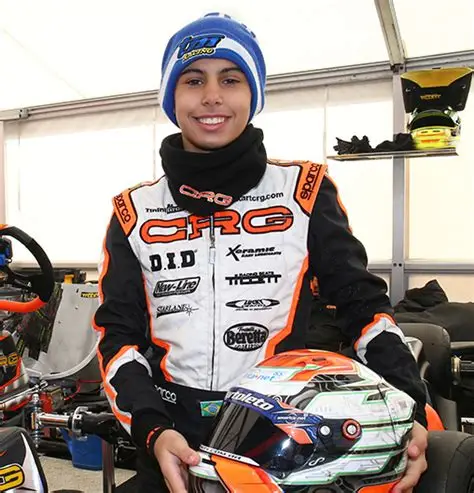
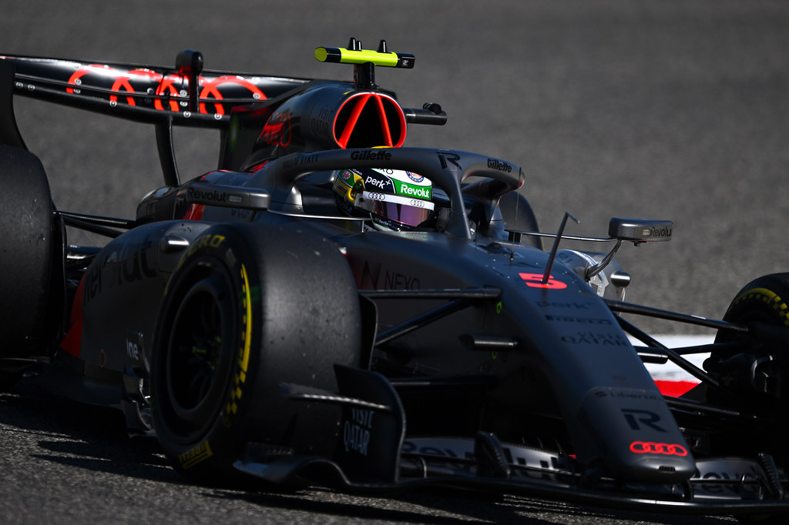

Carreira
Kart
Base
Gabriel iniciou no kart ainda criança, conquistando títulos nacionais e destaque internacional. Foi a base técnica que o levou para a Europa e abriu caminho para os monopostos.

Fórmula 3
2023
Campeão da FIA Fórmula 3 logo em sua temporada de estreia, mostrando consistência e maturidade acima da média.

Fórmula 2
2024
Subiu para a FIA Fórmula 2 e novamente brilhou, conquistando o campeonato em seu primeiro ano na categoria.

Fórmula 1
2025
Estreia na Fórmula 1 pela Sauber, tornando-se o primeiro brasileiro titular em tempo integral desde 2017.

Fórmula 1 – Audi
2026
Com a transformação da equipe na Audi F1 Team, inicia um novo capítulo em um projeto oficial de montadora.
